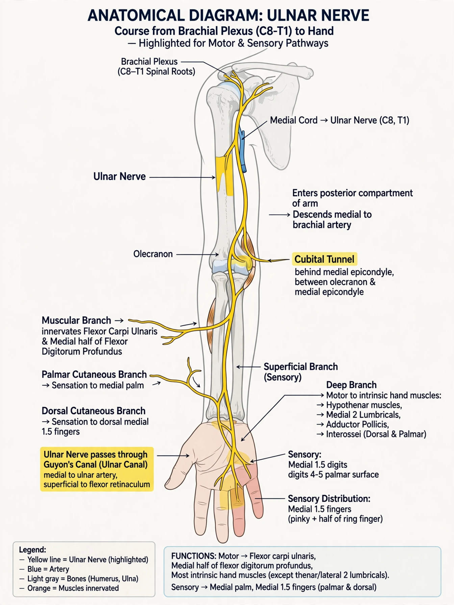

The ulnar nerve is one of the three main nerves of the arm, alongside the median and radial nerves. It arises from the medial cord of the brachial plexus (roots C8 and T1, sometimes with a contribution from C7), descends the arm, passes behind the medial epicondyle of the humerus at the elbow — where it is the structure struck in the sensation colloquially called hitting one's "funny bone" — and continues into the forearm and hand. It supplies most of the intrinsic muscles of the hand and sensation to the little finger and the ulnar half of the ring finger.

| Ulnar nerve | |
|---|---|
| From | Medial cord of brachial plexus (C8, T1) |
| Innervates | Flexor carpi ulnaris, medial flexor digitorum profundus, most intrinsic hand muscles |
| Sensory | Little finger, ulnar half of ring finger, medial hand |
| Clinical signs | Cubital tunnel syndrome; Guyon's canal syndrome; claw hand |
From its origin the ulnar nerve runs down the medial arm, pierces the medial intermuscular septum, and grooves the back of the medial epicondyle, where it can be felt (and rolled) under the skin. It then passes through the cubital tunnel between the two heads of flexor carpi ulnaris and descends the forearm beneath that muscle, supplying it and the ulnar half of flexor digitorum profundus. Near the wrist it gives off dorsal and palmar cutaneous branches and enters the hand through Guyon's canal (the ulnar canal) beside the pisiform bone, dividing into superficial sensory and deep motor branches.
In the hand the deep motor branch supplies the hypothenar muscles, the interossei, the third and fourth lumbricals, adductor pollicis and the deep head of flexor pollicis brevis — the muscles responsible for fine finger movements, finger abduction and adduction, and pinch strength. Sensation covers the palmar and dorsal aspects of the medial hand, the whole little finger and the medial half of the ring finger.
The nerve is vulnerable where it passes the elbow. Compression in the cubital tunnel — cubital tunnel syndrome — is the second most common entrapment neuropathy after carpal tunnel syndrome, causing numbness of the ring and little fingers and, in advanced cases, hand weakness and wasting. Compression at Guyon's canal, often from cycling handlebar pressure, can mimic or accompany it. In leprosy the thickened ulnar nerve is palpable at the elbow. Severe chronic lesions produce a "claw hand" deformity, and Froment's sign tests adductor pollicis weakness. Treatment ranges from splinting and activity modification to surgical decompression or transposition of the nerve in front of the elbow.
Brachial plexus · Median nerve · Radial nerve · Cubital tunnel syndrome
From Wikipedia, the free encyclopedia.